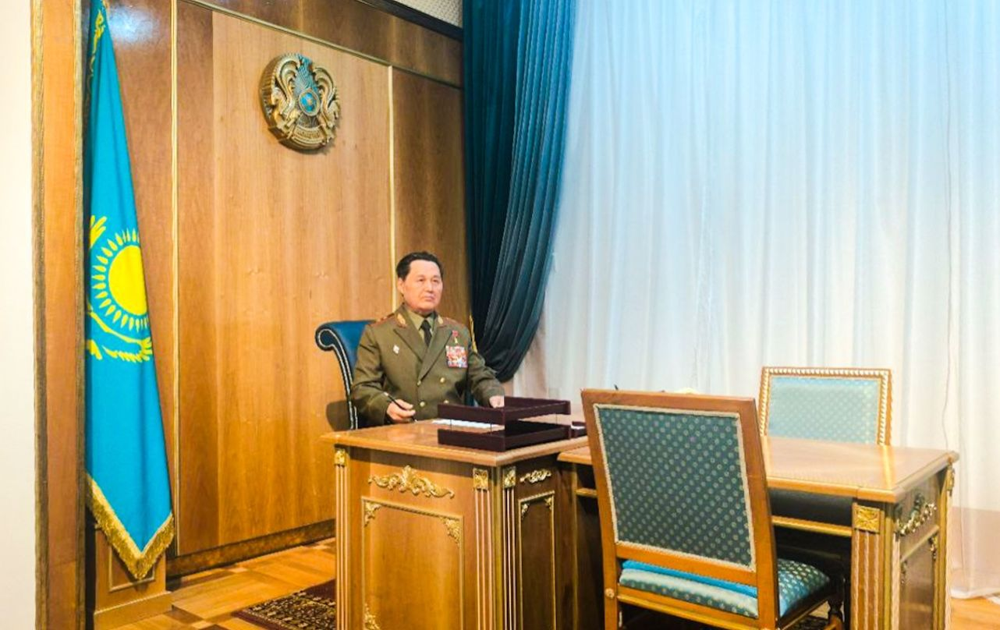
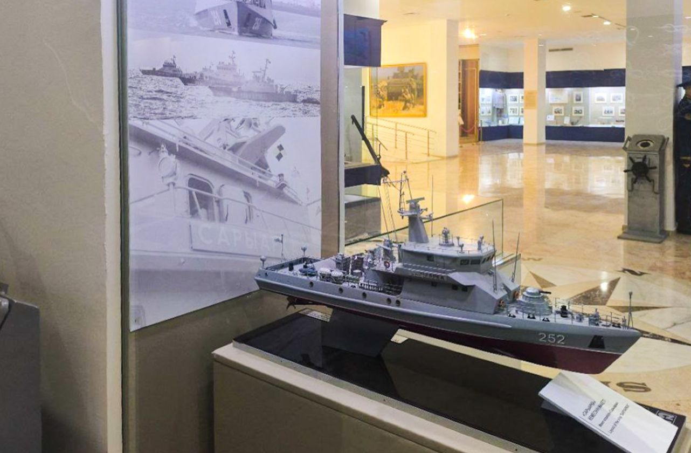
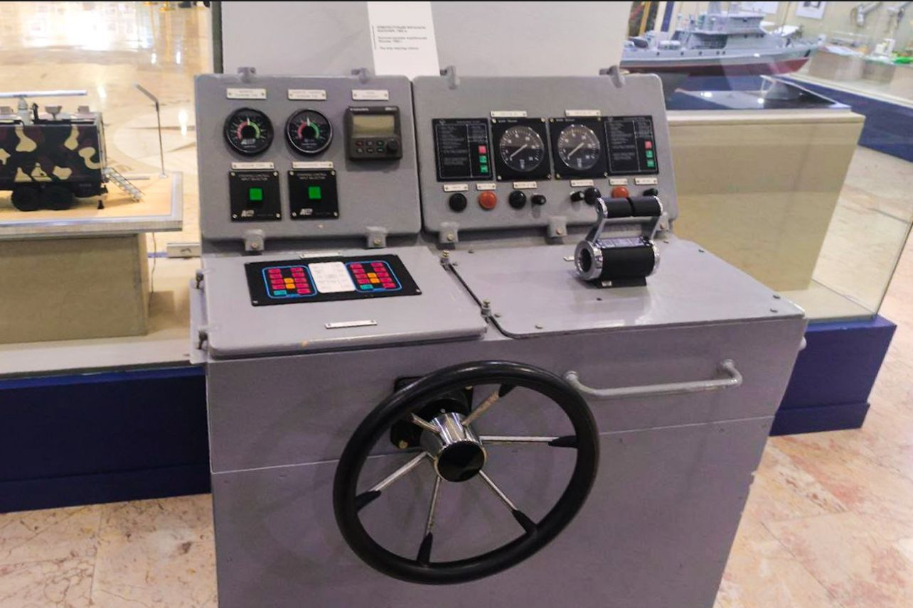
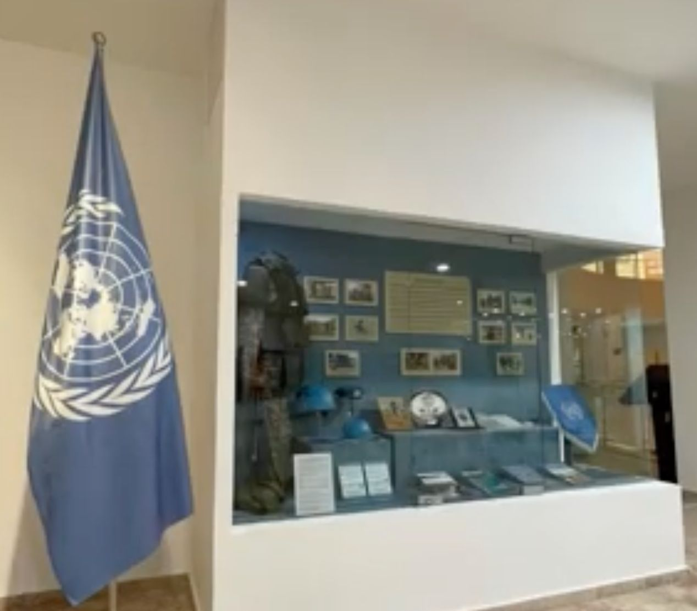

Armed Forces of Kazakhstan
Stop 4 of 10
From the creation of the armed forces in 1992 to today’s land, air-defence and naval forces — told through uniforms, models and a reconstructed office.

Formation of the Armed Forces
The exhibition presents the creation, development and modern stage of the Armed Forces of independent Kazakhstan. E-Museum identifies this as one of the museum’s principal halls.
The museum’s modern military history connects institutional development with equipment, uniforms, service traditions and the people who built the armed forces after independence.
Walking through the hall
The officer’s office. A reconstructed office puts a uniformed figure at a wooden desk, with the national flag and state emblem behind — a way of showing command as a place, not only an idea.
Sky and sea. A fighter cockpit marked “001” with pilot figures and an ejection seat stands near detailed ship models and a helm console with a steering wheel.
Ceremony and cooperation. An open parade car is shown in front of screens with archive footage, and a display beside the United Nations flag reflects international cooperation.
Main areas
- Formation of the Armed Forces
- Land Forces
- Air Defence Forces
- Naval Forces
- Military uniforms and insignia
- Modern military equipment
Independent Kazakhstan
The modern exhibition provides a transition from the historical events of the twentieth century to the military institutions of contemporary Kazakhstan. Visit Astana describes the museum’s halls as arranged according to the chronology of military history.
Photographs from this hall
Click a photo to open it full size.









